Cohort Revenue & Retention Analysis

Customer lifetime value (CLV) is a crucial metric to evaluate and steer long-term success for a product or service. We not only want to optimize the cost per-cost per acquisition (for example, with a media mix model with PyMC-Marketing), but also make sure this investment pays off through long-term revenue generated by users. Many CLV models exist in the literature (for contractual and non-contractual settings). Peter Fader and Bruce Hardie pioneered many of them, especially for models specified through a transparent probabilistic data-generating process driven by the user behavior mechanism. Currently, PyMC-Marketing 's CLV module provides the best Python production-ready implementations of these models. Many of these models allow user-level external time-invariant covariates (e.g. acquisition channel) to explain the variance of the data better.
In strategic business situations, we often need to look beyond user-level CLV and focus on a higher granularity: a cohort. These cohorts can be defined by registration or by first-time date. There are several reasons for working at the cohort level. For one, new privacy regulations such as GDPR might prohibit using sensitive individual-level data in models. In reality, individual-level predictions are not always necessary for strategic decision-making. On the other hand, from a technical perspective, while we can aggregate individual-level CLV at the cohort level, incorporating time-sensitive factors into these models is not straightforward and requires significant effort.
These observations led to the development of an alternative top-down modeling approach, where we model all cohorts simultaneously. This simple and flexible approach provides a robust baseline for CLV across the entire user pool. The key idea is to combine two model components in a single model: retention and revenue. We can use this model for inference (say, what drives retention and revenue changes) and forecasting.
This approach is based on Cohort Revenue & Retention Analysis: A Bayesian Approach.
The Data
To illustrate the approach, we consider a synthetic dataset with the following features:
cohort: month-level cohort tagn_users: number of users per cohortperiod: observation timen_active_users: number of active users (defined by, e.g., if they had made a purchase) for a given cohort at a given period.revenue: revenue generated by a cohort at a given period.age: the number of weeks since the cohort started with respect to the latest observation period.cohort_age: number of months the cohort has existed.
We can define the observed retention for a given cohort and period combination as
n_active_users / n_users. As this is a synthetic dataset, we have the actual retention
values, which we use for model evaluation.
Studying cohorts gives us much more information than working on aggregated data.
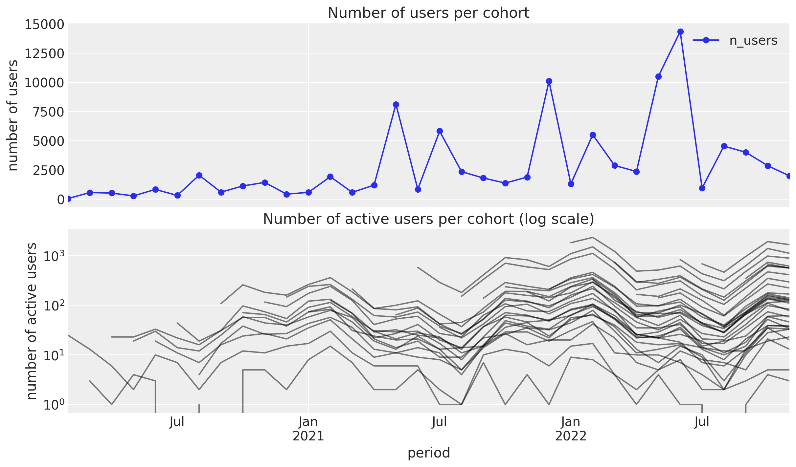
Let's look into the retention values as a matrix:
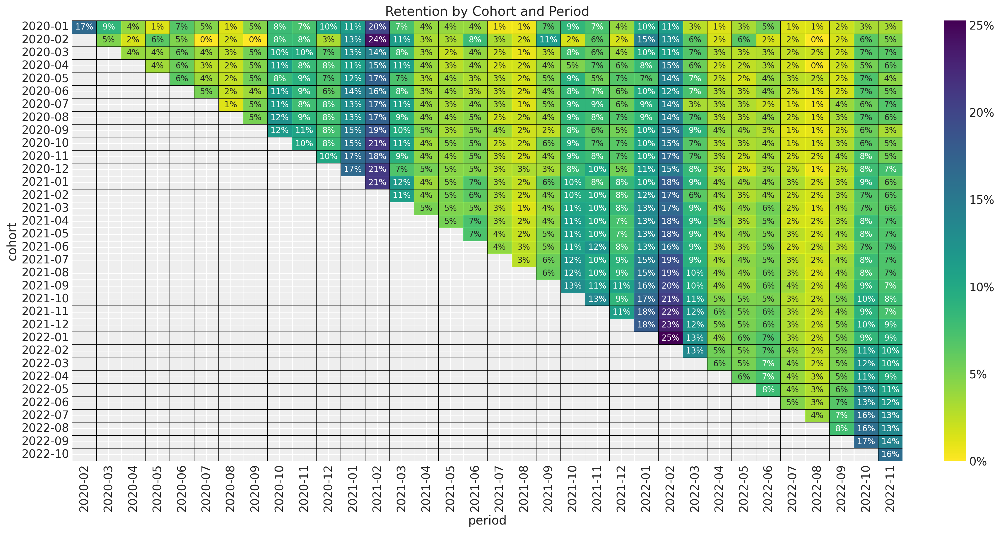
For example, in the upper left corner, we see the value of 17%; this means that for the 2020-01 cohort, 17% percent of the users were active during 2020-2.
From this plot, we see the following characteristics:
There is a yearly seasonality pattern in the observation period.
The retention values vary smoothly with both features
cohort age(number of months the cohort has existed) andage(the number of weeks since the cohort started with respect to the latest observation period.). We do not see spikes or strong discontinuities.
Let's visualize the retention as time series to better understand the seasonal pattern:
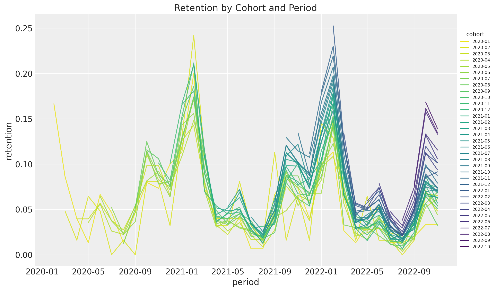
Retention usually peaks twice yearly, with the biggest spike around February. It is also interesting that overall retention increases with the cohort's age.
Let's look now into the revenue matrix:
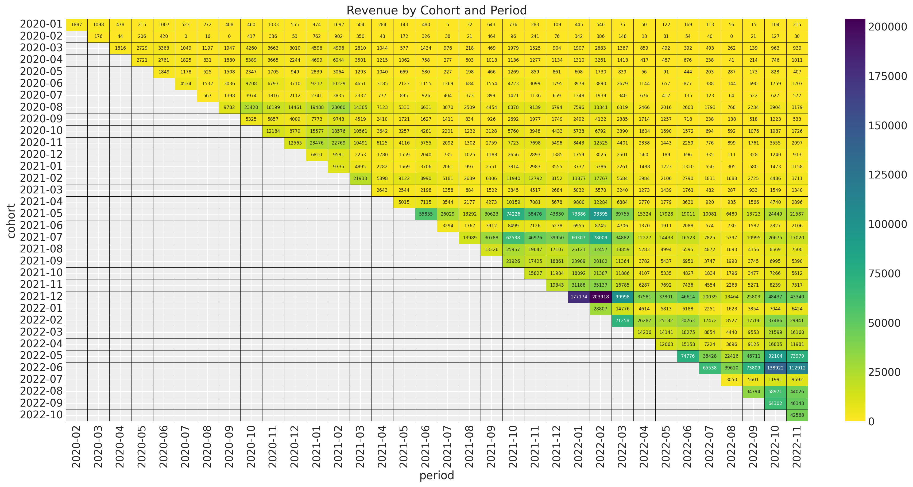
The newer cohorts (especially after 2021-5) have a much higher revenue volume. We also see that the seasonal pattern is present but much milder. This revenue matrix becomes much more transparent when looking into the matrix of active users:
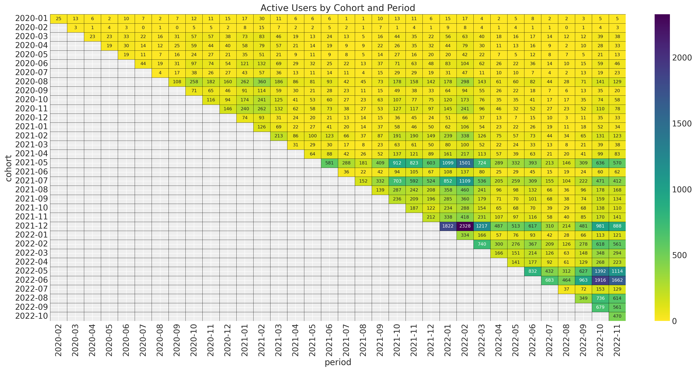
As expected, there is a strong correlation between revenue and the number of active users. We could also understand this relation as a combination of the cohort size and the retention values.
To start simple, let us first consider the retention model component.
Baseline Retention Model
We start with a period-based time split to get training and test sets. We use the former to fit the model and the latter to evaluate the output forecast.
Next, let's think about retention as a metric. First, it is always between zero and one; this provides a hint for the likelihood function to choose. Second, it is a quotient. This fact is essential to understanding the uncertainty around it. For example, for cohort A, you have a retention of 20 % coming from a cohort of size 10. This retention value indicates that two users were active out of these 10. Now consider cohort B, which also has a 20% retention but with one million users. Both cohorts have retention, but intuitively, you are more confident about this value for the bigger cohort. This observation hints that we should not model retention directly but rather the number of active users. We can then see retention as a latent variable .
After this digression about retention, a natural model structure is the following:
- A binomial likelihood to model the number of active users as a function of cohort size and retention.
$$ N_{\text{active}} \sim \text{Binomial} (N, p) $$
- Use a link function to model the retention as a linear model in terms of the age, cohort age, and seasonality component (plus an interaction term).
$$ \textrm{logit}(p) = \beta_{0} + \beta_{1} \text{cohort age} + \beta_{2} \text{age} + \beta_{3} \times \text{cohort age} \times \text{age} + \beta_{4} \text{seasonality} $$
This model is good enough for a baseline (see A Simple Cohort Retention Analysis in PyMC). The key observation is that all of the features (age, cohort age, and seasonality) are also known in the test set! Hence, we can use this model to generate forecasts for any forecasting window. In addition, we can easily add covariates to the regression component (for forecasting purposes, one has to have the covariates available in the future as well). Here, domain knowledge and feature engineering should work together to build a meaningful and actionable model.
BART Retention Model
For this synthetic data set, the model above works well. Nevertheless, disentangling the relationship between features in many real applications is not straightforward and often requires an iterative feature engineering process. An alternative is to use a model that can reveal these non-trivial feature interactions for us while keeping the model interpretable. Given the vast success in machine learning applications, a natural candidate is tree ensembles. Their Bayesian version is known as BART (Bayesian Additive Regression Trees), a non-parametric model consisting of a sum of $m$ regression trees.
One of the reason BART is Bayesian is the use of priors over the regression trees. The priors are defined in such a way that they favor shallow trees with leaf values close to zero. A key idea is that a single BART-tree is not very good at fitting the data but when we sum many of these trees we get a good and flexible approximation.
Luckily, a PyMC version is available PyMC BART, which we can use to replace the linear model component from the baseline model above. Concretely, the BART model enters the equation as
$$ \textrm{logit}(p) = \text{BART}(X) $$
Here, $X$ denotes the design matrix of covariates, which includes age, cohort age, and seasonality features.
This is how the model looks in PyMC:
with pm.Model(coords={"feature": features}) as model: # --- Data --- model.add_coord(name="obs", values=train_obs_idx, mutable=True) x = pm.MutableData(name="x", value=x_train, dims=("obs", "feature")) n_users = pm.MutableData(name="n_users", value=train_n_users, dims="obs") n_active_users = pm.MutableData( name="n_active_users", value=train_n_active_users, dims="obs" ) # --- Parametrization --- # The BART component models the image of the retention rate under # the logit transform so that the range is not constrained to [0, 1]. mu = pmb.BART( name="mu", X=x, Y=train_retention_logit, m=100, response="mix", dims="obs", ) # We use the inverse logit transform to get the retention # rate back into [0, 1]. p = pm.Deterministic(name="p", var=pm.math.invlogit(mu), dims="obs") # We add a small epsilon to avoid numerical issues. p = pt.switch(pt.eq(p, 0), eps, p) p = pt.switch(pt.eq(p, 1), 1 - eps, p) # --- Likelihood --- pm.Binomial(name="likelihood", n=n_users, p=p, observed=n_active_users, dims="obs")
For more details, see the complete blog post Cohort Retention Analysis with BART.
Remark: The response="mix" option in the BART class allows us to combine two ways
of generating prediction from the trees: (1) taking the mean and (2) using a linear model.
Having a linear model component on the leaves will allow us to generate better
out-of-sample predictions.
Let us see the in-sample and out-of-sample prediction for some subset of cohorts:
- In-sample
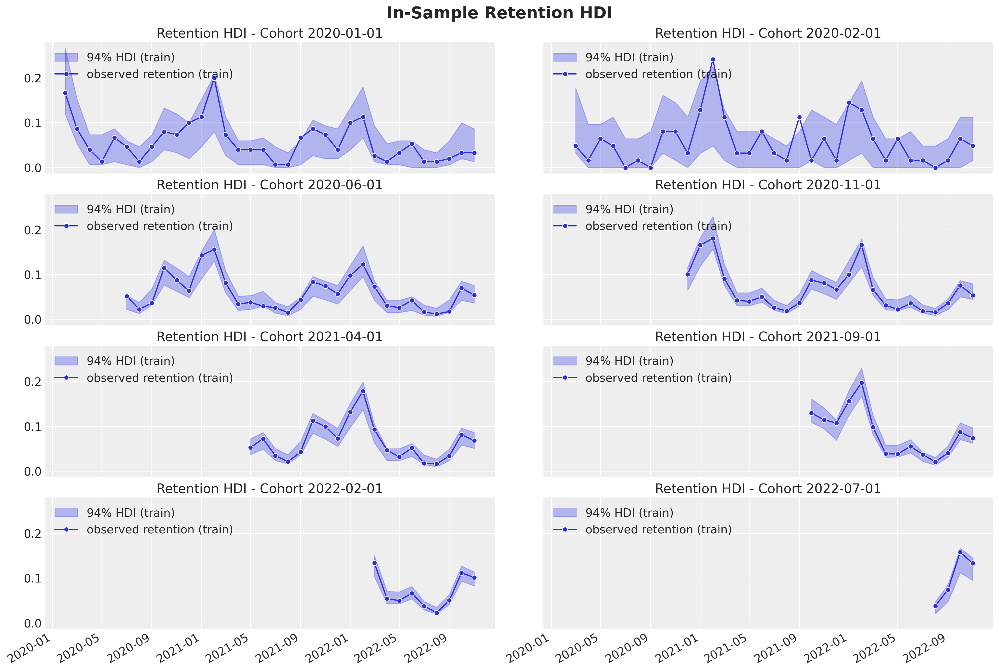
- Out-of-sample
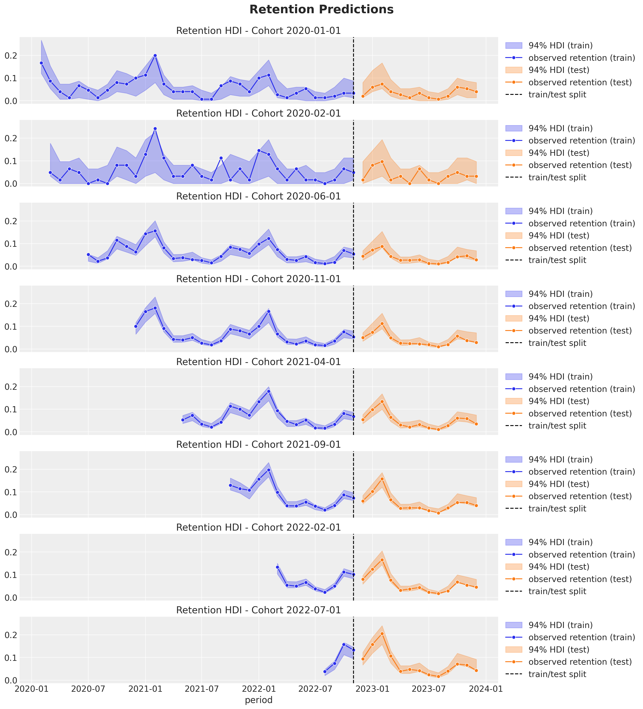
Here are some remarks about the results:
- As expected from the modeling approach, the credible intervals are wider for the smaller (in this example, the younger) cohorts.
- The out-of-sample predictions are good! The model can capture the trends and seasonal components.
- As we use age and cohort age as features, we expect closer cohorts to behave similarly (this is something we saw in the exploratory data analysis part above). In particular, we can generate forecasts for very young cohorts with very little data!
The PyMC BART implementation provides excellent tools to interpret how the model generates predictions. One of them is partial dependence plots (PDP). These plots provide a way of understanding how a feature affects the predictions by averaging the marginal effect over the whole data set. Let us take a look at how these look for this example:
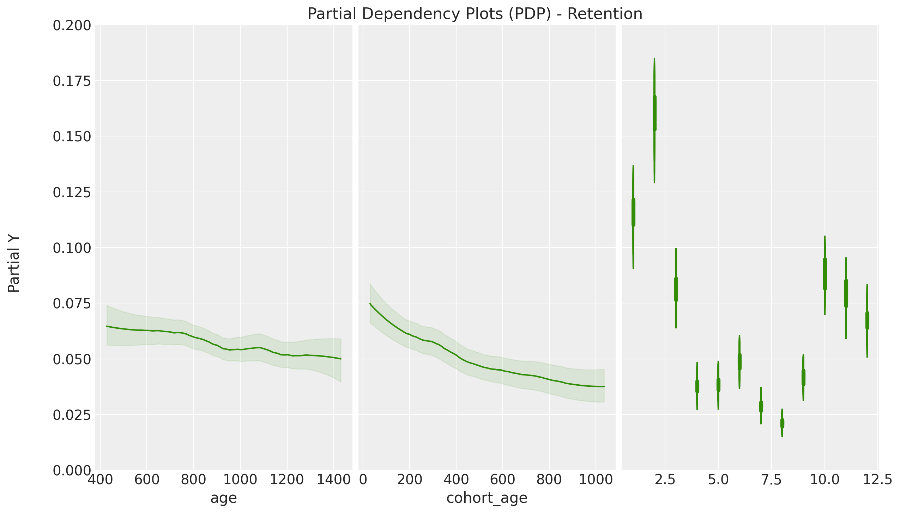
Here, we can visualize how each feature affects the model's retention predictions. We see that cohort age has a higher effect on retention than age, and we also see a clear yearly seasonal pattern. Moreover, we can additionally use individual conditional expectation (ICE) plots to detect interactions across features.
Revenue Component
The BART model performs very well on the retention component. Still, our ultimate goal is to predict future cohort-level value measured in money (not just retention metrics). Hence, it is crucial to add the monetary value to the analysis. Fortunately, the Bayesian framework allows enough flexibility to do this in a single model! Let's think about the revenue variable:
It has to be non-negative.
In general, we expect bigger cohorts to generate more revenue.
The more active users, the more the revenue.
Therefore, a natural metric to compare cohorts evenly is the average revenue per user.
Given these observations, it is reasonable to model the revenue component as:
$$ \text{Revenue} \sim \text{Gamma}(N_{\text{active}}, \lambda), \quad \lambda > 0 $$
where $1 / \lambda$ represents the average revenue per user. Observe that the mean of this distribution is $N_{\text{active}} / \lambda$.
We are now free to choose to model the parameter $\lambda$. For this specific example, we see that the strong seasonality in retention mainly drives the seasonal component in the revenue component. Thus, we do not include seasonal features from the $\lambda$ model. A linear model in the cohort and cohort age features (plus an interaction term) provides a good baseline for many applications. As $\lambda$ is always positive, we need to use a link function to use a liner model:
$$ \textrm{log}(\lambda) = \gamma_{0} + \gamma_{1} \text{cohort age} + \gamma_{2} \text{age} + \gamma_{3} \times \text{cohort age} \times \text{age} $$
The retention and revenue models coupled by the variable $N_{\text{active}}$ through the latent variables $p$ (retention) and $1 / \lambda$ (average revenue per user) is what we call the cohort-revenue-retention model.
Here is a diagram of the model structure:
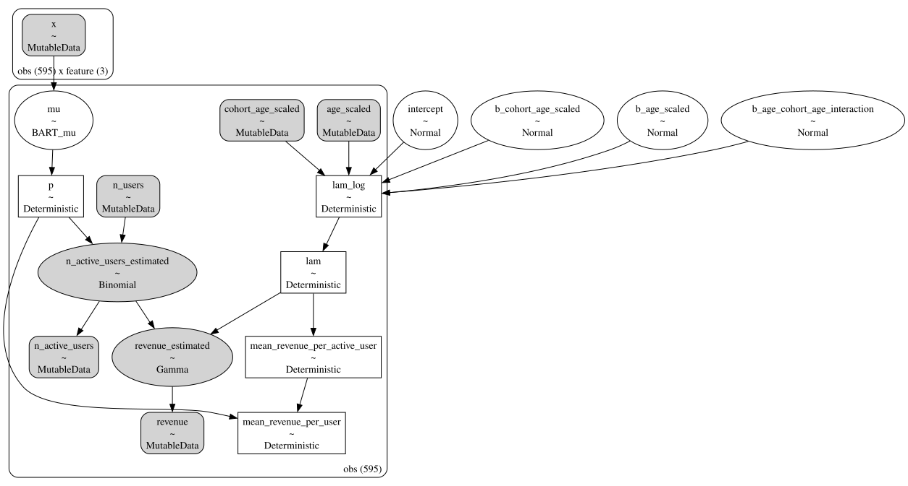
The out-of-sample predictions for the revenue component are pretty good as well:
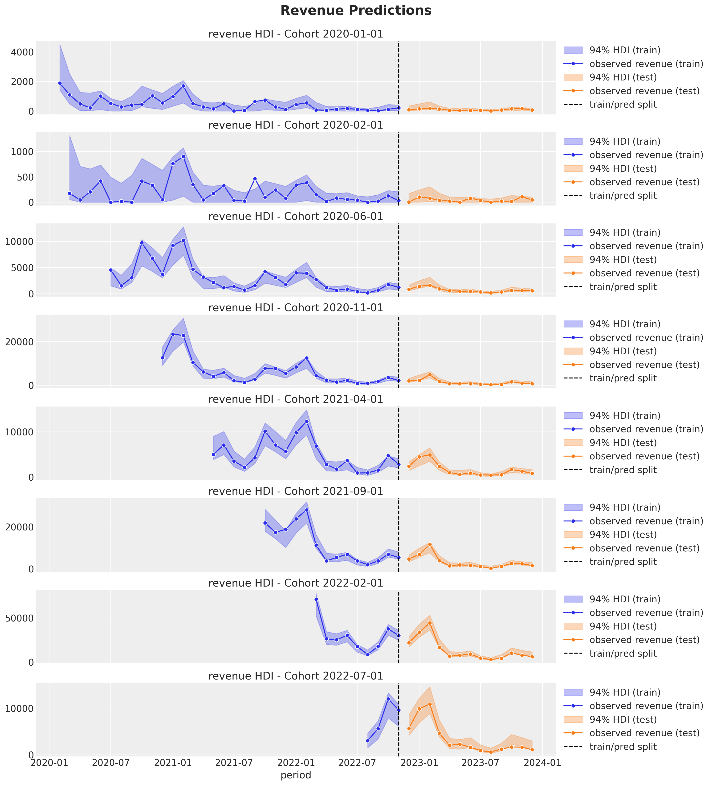
Note that the revenue predictions have a seasonal component, which comes from the $N_{\text{active}}$ through the retention $p$. In addition, similarly, as for the retention predictions, the credible intervals are wider for the smaller (in this case, younger) cohorts, and we can provide very good predictions for very young cohorts as, in some sense, we are pooling information across cohorts through the model.
We can also get insights into the average revenue per user and active user behavior as a function of the cohort features.
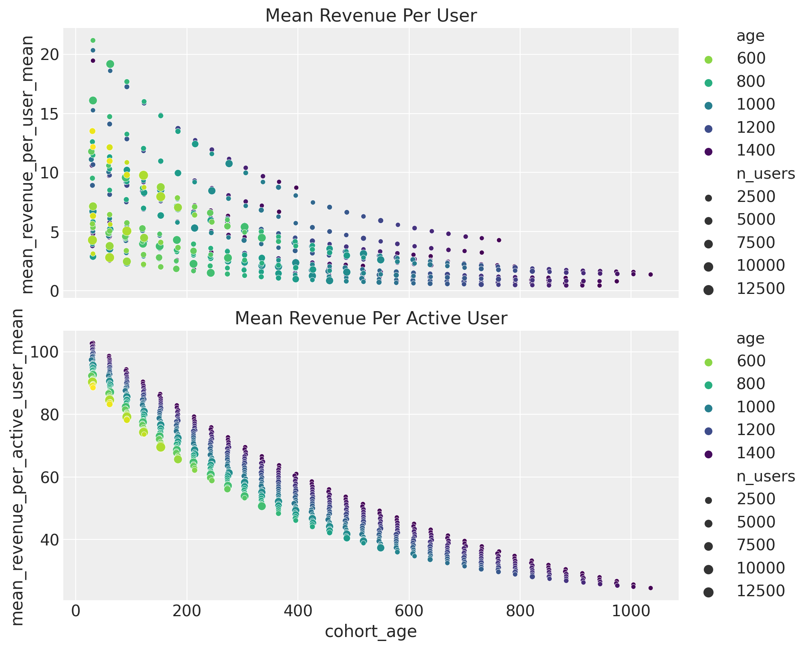
Conclusion
In this blog post, we described how to leverage Bayesian methods to develop a solid baseline for a customer lifetime value at the cohort level by coupling retention and revenue components. This model is flexible, interpretable, and provides good forecasts (demonstrated in a synthetic dataset and from experience from real case applications). Moreover, it is a model on which we can build upon of. We can:
Seamlessly add more features to the BART model. We need to ensure they are available in the future if we want to do forecasting.
We can split the data and consider cohort matrices per acquisition channel. Then, we could combine this with media mix model results to have a better estimate (it is not perfect because the user-level channel assignment had to be through an attribution model) of CAC / CLV (i.e. cost-per-acquisition / customer lifetime value).
Include more features in the revenue component. We can control them via a linear model or use more complex methods, such as Gaussian processes or even neural networks. See, for example, the blog post Cohort Revenue Retention Analysis with Flax and NumPyro where we use a neural network instead of a BART model.
The model parametrization is "not that important" aspect of the model. What is key is the coupling mechanism driving the CLV: retention and average revenue per user.
Another exciting application of this model is causal analysis. For example, assume we ran a global marketing campaign to increase the order rate (for example). Suppose we can not do an A/B test and have to rely on quasi-experimental methods like "causal impact". In that case, we might underestimate the campaign's effect if we aggregate all the cohorts together. An alternative is to use this cohort model to estimate the "what-if-we-had-no-campaign" counterfactual at the cohort level. It might be that newer cohorts were more sensitive to the campaign than older ones, and this could explain why we are not seeing a significant effect on the aggregation.
There are still many things to discover and explore about these cohort-level models. For example, a hierarchical model across markets on which we pool information across many of these retention and revenue matrices. This approach would allow us to tackle the cold-start problem when we do not have historical data. Stay tuned!
Work with PyMC Labs
If you are interested in seeing what we at PyMC Labs can do for you, then please email info@pymc-labs.com. We work with companies at a variety of scales and with varying levels of existing modeling capacity. We also run corporate workshop training events and can provide sessions ranging from introduction to Bayes to more advanced topics.